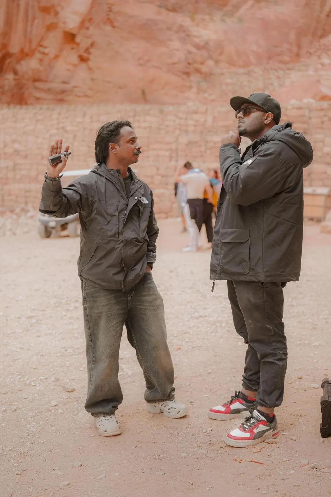
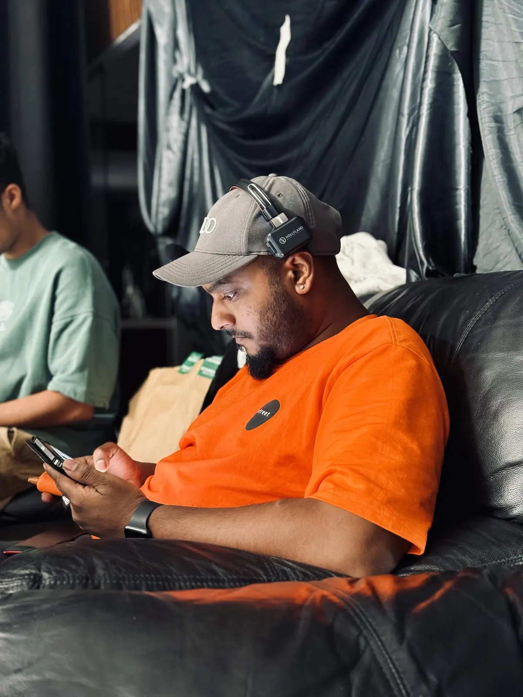
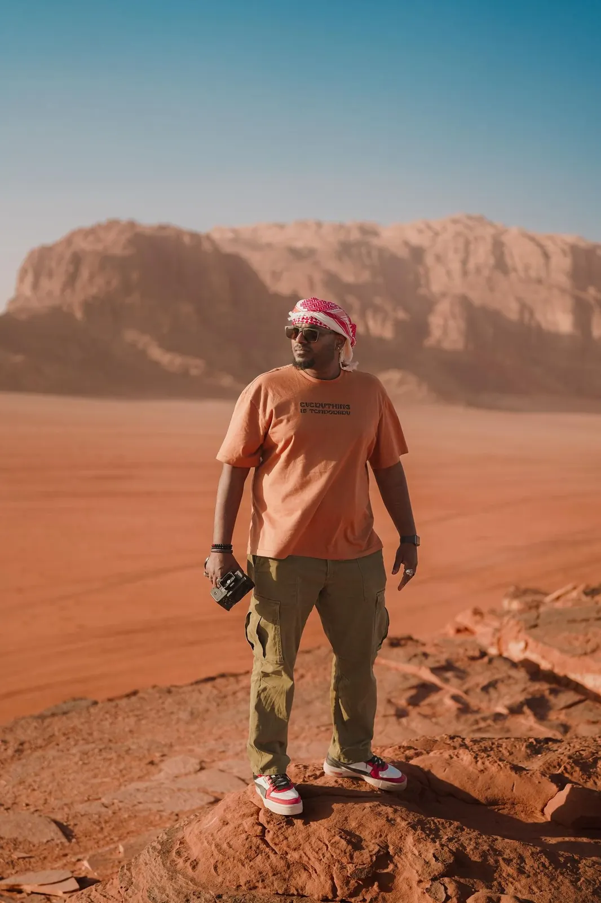
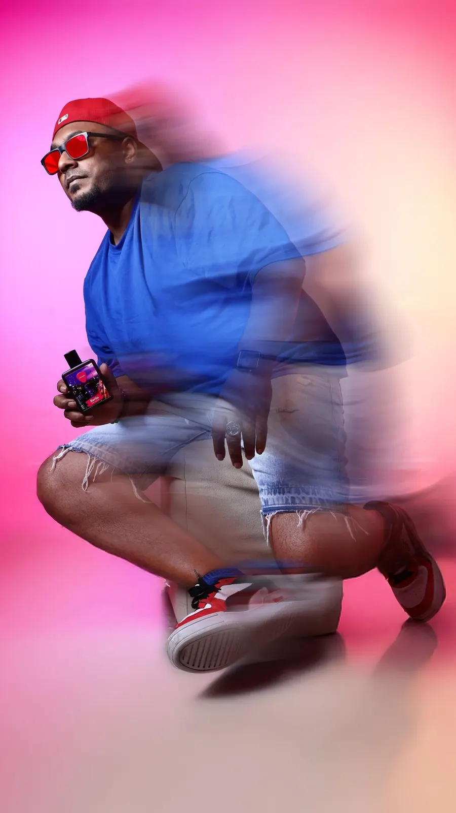

11+ years directing cinematic commercials across fragrance, automotive & luxury. Actively building AI-native production pipelines for video, image, and 3D model generation. Paired with LLM orchestrated workflows and integrated with real commercial filmmaking discipline.
The director's cut. Every film has the version that shipped and the version the director hears in his head. This is the second one, re-edited for pure momentum.
RUNTIME 0:31FORMAT 16:9 · 4KCUT 2026 ShowreelSOUND ON
Campaigns & films.
A decade behind the lens across fragrance, automotive, and luxury. Every frame below passed through my hands twice. Once through the viewfinder and again through the timeline. Lifestyle, Product, 3D & CGI, AI, Campaign and Platform Focused Films, carried end to end as producer, director, and editor.

Key projects
French Avenue · AI Brand Film
The fragrance film, generated frame by frame.
A fully AI-generated brand film for French Avenue, produced in the first wave of the medium. Hand directed shot by shot across a transatlantic collaboration, bending early AI to a commercial standard it wasn't built to reach.
Role ProducerArtist Blair VermetteAgency Rabbithole
French Avenue · Brand Film
The brand awareness film. For the house, not the bottle.
French Avenue needed an introduction, not an ad. A film to answer one question, what does this house feel like? Product stays in the wings & atmosphere takes the lead. The light it lives in, the pace it moves at, the world every future campaign will live inside.
Role ProducerAgency Velvet Runhouse
French Avenue · Nabatieh
Nabatieh, a place you can wear.
A fragrance film rooted in place. The land tells the story first, origin, heritage & atmosphere all doing the work before the bottle ever enters frame. Scent as geography, product as payoff.
Role ProducerAgency Little Stories Production

Lifestyle Films
Fragrance World · Champion
Champion! Three ideals, one bottle.
One bottle, three ideals of the sport. A fragrance trilogy art directed around identical product geometry, where every world changes, the light, the palette, the tempo, & the bottle never does. Three films, one discipline.
Role ProducerAgency Little Stories Production
01 / 16
Product films
French Avenue · Note Pairing
Amber Saffron & Iris Patchouli.
A pure product film built on the notes themselves. Amber warmth against iris cool, two temperatures sharing one frame, ingredient led framing with the bottle as hero throughout. No story but the scent.
Role ProducerAgency Velvet Runhouse
01 / 02

3D & CGI films
French Avenue · Aromatix
Aromatix, built not shot.
The Aromatix hero rebuilt entirely in 3D. Glass with real refraction, liquid with real weight, a label true to the print file, all lit like a studio tabletop because that is the standard it has to survive. If the render cannot pass for the product, the render does not ship.
Role ProducerAgency Two Fold
01 / 16
AI films
French Avenue · Jade
Jade & Jade Giallo, one stone, two lights.
A two scent AI film, twin worlds generated for the Jade pair & directed like a real shoot. Same lens logic, same light discipline, shot to shot continuity held by hand because the machine holds nothing on its own. Two atmospheres, one signature.
Role ProducerAgency Billionaire Affair
01 / 05

Campaign films
Fragrance World · Ramadan
Ramadan Kareem.
The holy month, opened at flagship scale. A cultural film leading the brand's biggest seasonal moment, reverence first, product second, made to sit inside the season rather than sell against it. The kind of film a house trusts you with once a year.
Role ProducerAgency RAW Studios
01 / 04
Platform Specific Films
Street Origins · 9:16
Street Origins in Black, the street's only uniform.
The series opener. Black sets the template the whole line follows, one bottle, one color world, built vertical first because that is where the street actually watches. Every edition after this inherits its rules from here.
Role ProducerAgency Little Stories Production
01 / 06
The film before the film.
Every film on this page started as a document. Story, screenplay, shot-by-shot boards, sound notes — with AI-generated reference frames standing in for photography that doesn't exist yet. One deck carries the vision out of my head and into everyone else's: client sign-off, crew alignment, the post brief — a single source of truth before a frame is shot.
Below, the complete pre production deck for French Avenue's Royal Blend Séquoia, page by page, exactly as it went to the team. And beneath it, what came back. The distance between a written idea & a finished commercial, & how that distance gets crossed.
Royal Blend Séquoia · storyboard deck · 25 pages · tap to enlarge
The delivered film
Royal Blend Séquoia, shot on paper first.
Generative production.
Not prompts for their own sake. A working pipeline that fuses generative AI with real commercial filmmaking discipline, a controlled system where lens logic, lighting continuity, product accuracy & grade survive end to end. The machine generates, the director governs.
Under the routing layer sits a crew, 340 plus task specific skills & defined role agents, every stage assigned to the model that does it best. Reusable, versioned, orchestrated, nothing free floats. That is how broadcast quality holds at the speed of 100 plus commercials a year.
Four models. Defined roles. One director.
LLM routing run as a production department, not a chatbot habit. Every task is assigned by model strength, every output versioned, nothing free-floats — 340+ specialised skills sit under the routing layer and keep hundreds of deliverables consistent.
Imagined light, photographed truth.
A hybrid workflow built on one non negotiable, the product is real. Generation designs the world & the light, then the light is rebuilt physically & the actual bottle is shot into it. The dream is generated, the glass is not.
Every image starts with the scent. Notes decomposed into palette, material, atmosphere & story until the brief reads like a lighting plot. The real bottle, shot clean on white, locked as geometry ground truth, & the hero frame generated against it with the light authored in the prompt, key, fill, kicker, colour temperature. Scent in, cinematography out.
Then the move that defines the studio. The generated frame becomes the lighting diagram. The plot is rebuilt physically, the real bottle photographed to match the AI frame's perspective, focal length & light, & Photoshop composites truth into the world, edge, grain, colour, reflection, with retouch holding glass, liquid & label to catalogue standard. The product is never AI approximated, only AI staged. And none of it is solo work, it is a directed crew, end to end.
White-BG references · locked geometry
→
Prompt · authored like a lighting plot
“A model in a deep-red satin slip dress holds the exact Sh’Mallow Fluff bottle from the reference images at chest height — coral lacquer body, ribbed coral cap, rose-gold knurled collar, label reproduced faithfully. Warm amber key from camera left, soft falloff, crimson tones, shallow depth of field, 85mm, intimate luxury editorial mood.”
→
Generated campaign frame
White-BG references · locked geometry
→
Prompt · authored like a lighting plot
“Two pairs of hands pass the exact Nectaré Extradose bottle from the reference images between them — honeycomb-cell glass body, gold lattice, amber cap reproduced faithfully. Scent notes staged as set dressing: honeycomb, dipper, amber resin, gilded roses on gold velvet. Candlelight key from camera left, warm bokeh field behind, shallow depth of field, 85mm, opulent gourmand editorial mood.”
→
Generated campaign frame
01 · Reference plate · locked geometry→
Prompt · authored like a lighting plot
“The exact D'love bottle from the reference plate planted at a low angle in a mound of desert sand — clear glass, cobalt ribbed cap, label reproduced faithfully. Behind it, dunes at sunset: low sun on the horizon, a camel caravan in silhouette, deep amber sky. Strong warm backlight through the juice, rim on the cap, shallow depth of field, 85mm, golden-hour desert editorial mood.”
→02 · Generated target · the lighting plot→03 · Studio rebuild · plot made physical→04 · Camera RAW · straight off sensor
↓
05 · Final · real bottle, composited & graded
The film that was never filmed.
No single prompt films. Coverage is planned like a shoot, generated shot by shot, reviewed as dailies & finished with the same post discipline as a live action commercial. The model is the camera department, not the filmmaker.
A film begins as a written treatment and beat sheet, world, character, arc, tempo, directed on paper before a frame is generated. The white background bottle anchors per shot keyframes, every shot generated individually, image to video, camera language specified per shot, & the model chosen per job, Kling 3.0, Seedance 2.0 & Veo, the way you'd choose a lens. Circle takes are pulled from every batch while locked references hold character & product identity across shots generated hours apart. One story, no drift.
Selects conform to the boarded timeline in DaVinci Resolve for a node based grade. Continuity first, shots from different generations matched into one photographic reality, then the look pass, film referenced grade, grain, texture. After Effects carries paint outs, character composites into generated footage, type & atmosphere, & sound is built in layered stems, ambience, foley, transitions, score. The 4K master fans out to 16:9 · 9:16 · 1:1 · 4:5, reframed per ratio, never centre cropped.
Locked cast · props · set — consistency references
→
Image-to-Video · Shot 6EPrompt · camera language authored per shot
Every shot is written like a camera note, not a wish. Lens and move first — focal length, push or hold, eye level. Then blocking: who enters, what the hands do, where the gaze lands. Then light — direction, hour, quality — the way a gaffer would hear it. Then the locks: character, prop and wardrobe identity pinned to the reference set so nothing drifts between generations. Atmosphere last, render discipline always — ultra-clean, noise-free.
↓
SH 1ASH 1BSH 1CSH 2ASH 2BSH 3ASH 3BSH 3CSH 4ASH 4BSH 5ASH 5BSH 6ASH 6BSH 6CSH 6DSH 6ESH 7ASH 7BSH 7CSH 8ASH 8BSH 9ASH 9BShot board · nine scenes, twenty-four keyframes — every frame boarded before a frame moves
↓
Finished film · every shot generated individually, conformed & graded
Where instinct becomes instruction.
Generative tools have no taste & no memory. Left alone, lens logic wanders, light stops being motivated, brands blur. The answer is not better prompts, it is architecture, twelve years of set knowledge written into rules the machine cannot ignore.
Craft, at scale.
Direct it like film
Every frame carries commercial filmmaking logic, lens language, lighting continuity, product accuracy, pacing. AI does not relax the standard, it has to clear it. Same bar, harder judge.
Build the system
Style bibles, reusable reference packs, versioned prompts and nodes. The pipeline is what lets a brand ship 100+ a year and still look intentional.
Protect each brand
Multi brand by default. Distinct visual signatures, strict separation, zero dilution, a parent & its sister lines built to never blur into one another. Three houses can share one pipeline, they can never share a face.
Driven by passion.
The eye doesn't clock out. What gets shot when nobody is paying for it, the nights, the machines & the city that never dims.
Shot on iPhone
Solomun at FIVE LUXE, Dubai. One night, one phone, no rig, & the same rules as set, find the light, hold the frame.
Who's behind the camera.
On locationDIR. LGS
A self taught cinematographer grown into a commercial filmmaker, now running end to end production for a multi brand fragrance house & building the brand identity pipeline across the parent house & its sister lines. Nobody handed me the frame, I learned to earn it.
Eleven plus years across fragrance, automotive & luxury, owning the full chain from concept & direction through edit, colour, sound & delivery, & leading the multidisciplinary teams behind it. The credit reads producer, director & editor because the work did.
There is an engineer underneath the director, an M.E. degree that means high performance product is understood at a technical level, not just admired through a lens. It shows in the energy of the content, especially on anything that moves. I know what the machine is doing before I decide how it should look doing it.
Production Sheet
Experience11+ years
IndustriesFragrance · Auto · Luxury
BaseDubai · Global
CredentialsSony Shooter · DJI Pilot
Let's build something together.
Got an ambitious commercial idea?
If you need someone who can set the bar, lead the team, and tell your brand's story — let's talk.